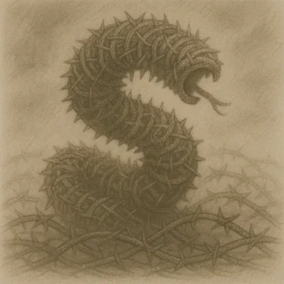
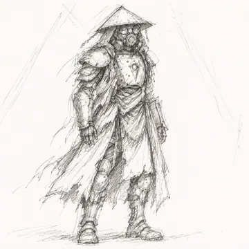

Бестиарий Европейской Пустоши
Библиотека Зелёной Зоны Олегус
Монстры
Из бестиария Европейской Пустоши. Составитель и иллюстратор — Семён фон Кройц, криптолог Зелёной Зоны Олегус.
Железный Червь

Опасность: средняя
Ареал обитания: Военные и складские базы
Агрессивность: максимальная
Чёрный мутант
 Опасность: высокая
Опасность: высокая
Ареал обитания: Закрытые комплексы, места, пораженные чёрным мором или чёрной гнилью.
Агрессивность: средняя
Механизированный солдат

Опасность: крайне высокая
Ареал обитания: Везде на территории Европейской Пустоши.
Агрессивность: варьируется
Дэми-пёс
 Опасность: высокая
Опасность: высокая
Ареал обитания: Везде на территории Европейской Пустоши
Агрессивность: высокая